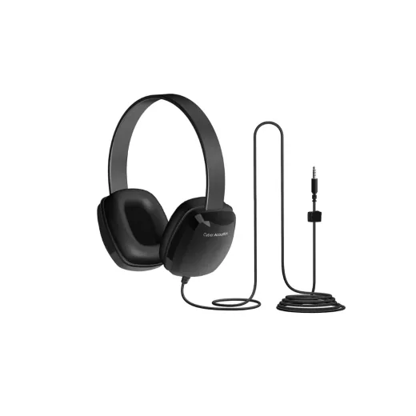
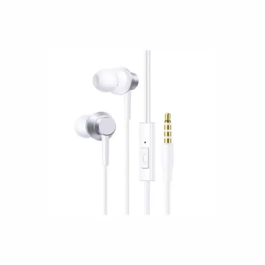
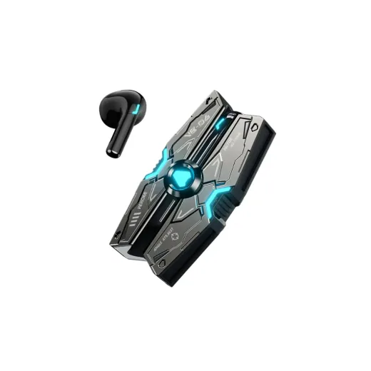
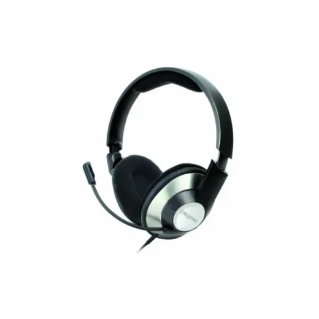
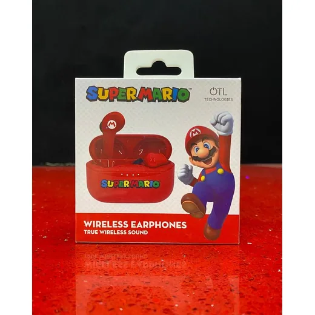
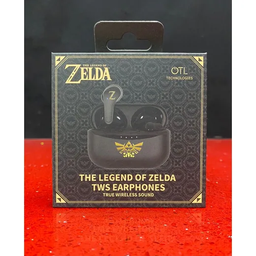
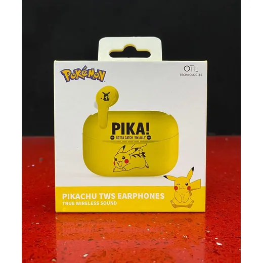

Audifono · Modelo ACM6004
Audifono Cyber Acoustics ACM-6004 3.5mm
L 280
En Sycom
Precio en cada tienda
| Tienda | Precio | Antes | Disponibilidad | |
|---|---|---|---|---|
| Sycom | L 280 | — | Disponible | Ver en tienda › |
Precios referenciales tomados de cada tienda el 14 de noviembre de 2026. El precio válido es el que muestra la tienda al comprar.
Otros audífonos Audifono

Audifono C/Microfono Baseus HZ11 Blanco 3.5mm A00164200213-Z1L 172.5En Sycom
Audifono Bluetooth Wekome VB06 TWS NegroL 595En Sycom
Audifono C/Microfono Creative HS-620 3.5mmL 600En Sycom
Audifono Inalambrico Bluetooth Mario Rojo OTLL 700En Game Station
Audifono Inalambrico Bluetooth Zelda Negro OTLL 700En Game Station
Audifono Inalambrico Bluetooth Pikachu OTLL 700En Game Station Audifono Bluetooth-3.5mm THONET & VANDER Dauer Negro HK096-03615L 895En Sycom
Audifono Bluetooth-3.5mm THONET & VANDER Dauer Negro HK096-03615L 895En Sycom Audifono Bluetooth Baseus Bass 35 Max A00070800221-00 BlancoL 895En Sycom
Audifono Bluetooth Baseus Bass 35 Max A00070800221-00 BlancoL 895En Sycom